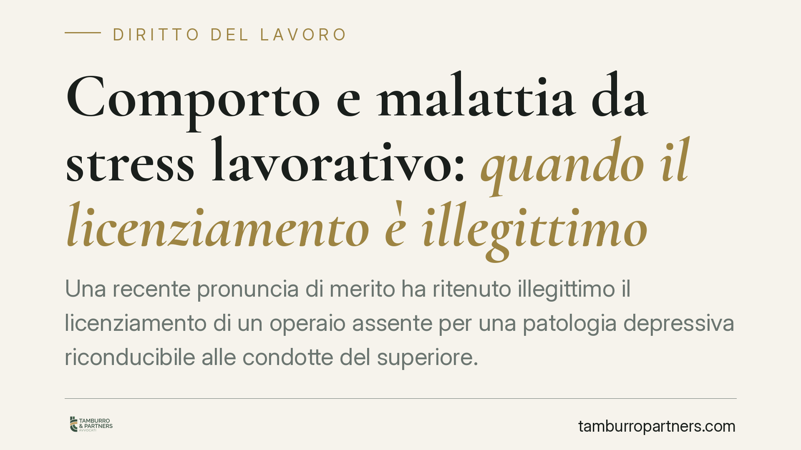

Comporto e malattia da stress lavorativo: quando il licenziamento è illegittimo
Una recente pronuncia di merito ha ritenuto illegittimo il licenziamento di un operaio assente per una patologia depressiva riconducibile alle condotte del superiore. Il principio: le assenze provocate da un ambiente di lavoro nocivo non possono essere computate nel periodo di comporto. Un tema delicato, dove tutto ruota attorno alla prova del nesso causale.

Il caso
Un operaio di un'azienda tessile viene licenziato per superamento del periodo di comporto, cioè per aver esaurito il limite massimo di assenze per malattia consentito dal contratto. Le assenze, però, erano collegate a una patologia depressiva che il lavoratore riconduceva a ripetuti attacchi verbali del proprio superiore.
Secondo una recente pronuncia di merito del Tribunale di Napoli Nord (sezione Lavoro), il licenziamento è stato ritenuto illegittimo. Il ragionamento: se la malattia deriva da un ambiente di lavoro nocivo, le relative assenze non possono essere addossate al lavoratore ai fini del comporto.
*Il numero e la data esatti della sentenza sono in corso di verifica: riportiamo qui il principio, non i dettagli identificativi non confermati.*
Inquadramento normativo
La disciplina del comporto ha il suo fondamento nell'art. 2110 del Codice civile, che tutela il lavoratore assente per malattia o infortunio conservandogli il posto per un periodo stabilito da legge, contratti collettivi o usi. Superato quel periodo, il datore può recedere.
Il punto critico è un altro. L'art. 2087 c.c. impone al datore di adottare tutte le misure necessarie a tutelare l'integrità fisica e la personalità morale del lavoratore. Se la malattia nasce proprio da una violazione di questo obbligo — ad esempio da condotte vessatorie o da un contesto ambientale patogeno — le assenze conseguenti non possono essere considerate un rischio a carico del dipendente. Diversamente, il datore trarrebbe vantaggio dal proprio inadempimento.
Su questa linea si è espressa più volte anche la giurisprudenza di legittimità: la Cassazione ha affermato che, quando l'assenza dipende da una malattia causalmente riconducibile all'inadempimento datoriale, i giorni relativi vanno esclusi dal computo del comporto. Resta però fermo un presupposto: la prova del nesso causale tra condotta datoriale e patologia grava sul lavoratore.
Attenzione al regime sanzionatorio
Qui serve chiarezza, perché la conseguenza del licenziamento illegittimo dipende dalla data di assunzione.
- Per i lavoratori assunti prima del 7 marzo 2015 si applica l'art. 18 della Legge n. 300/1970 (Statuto dei Lavoratori), con possibilità, nei casi più gravi, di reintegrazione nel posto di lavoro.
- Per i lavoratori assunti dal 7 marzo 2015 si applica il regime delle tutele crescenti previsto dal D.Lgs. n. 23/2015, che modula diversamente le conseguenze (reintegra in ipotesi più circoscritte, altrimenti indennità economica).
Dare per scontata la reintegrazione senza verificare la data di assunzione è un errore ricorrente. La tutela concretamente applicabile va sempre valutata caso per caso.
Cosa cambia in concreto
Lato lavoratore. La decisione conferma che l'assenza per malattia non è sempre "neutra" ai fini del comporto. Se la patologia deriva da un ambiente di lavoro nocivo, si apre uno spazio di tutela. Ma tutto dipende dalla capacità di dimostrare il legame tra le condotte subite e la malattia: senza prova del nesso, il licenziamento regge.
Lato datore. Prima di procedere al licenziamento per comporto, è opportuno verificare che le assenze non siano riconducibili a criticità organizzative o a condotte interne segnalate dal dipendente. Un recesso formalmente corretto sul conteggio dei giorni può comunque risultare illegittimo se a monte c'è una violazione dell'art. 2087 c.c.
Cosa fare in concreto
- Documentate le cause della patologia. Conservate certificati, diagnosi, eventuali referti che colleghino la malattia al contesto lavorativo.
- Segnalate tempestivamente per iscritto. Le condotte lesive vanno contestate al datore con comunicazione tracciabile, preferibilmente via PEC, per fissare una data certa.
- Verificate il conteggio del comporto. Controllate che le assenze eventualmente riconducibili all'ambiente di lavoro non siano state indebitamente computate.
- Rispettate i termini di impugnazione. Il licenziamento va impugnato entro 60 giorni dalla comunicazione; il ricorso o il tentativo di conciliazione entro i successivi 180 giorni. Sono decadenze rigorose: decorsi i termini, il diritto si perde.
- Fate valutare la vostra posizione. La distinzione tra art. 18 e tutele crescenti incide in modo decisivo sull'esito: consigliamo di verificare per tempo il regime applicabile al vostro rapporto.
---
Contributo informativo a cura di Tamburro & Partners - Avv. Giuseppe Tamburro. Non costituisce parere legale.
Ogni storia di lavoro ha i suoi tempi.
Se gestisci HR e vuoi un confronto su contenzioso, ispezioni o licenziamenti, scrivi allo studio. Ti rispondiamo entro un giorno lavorativo.